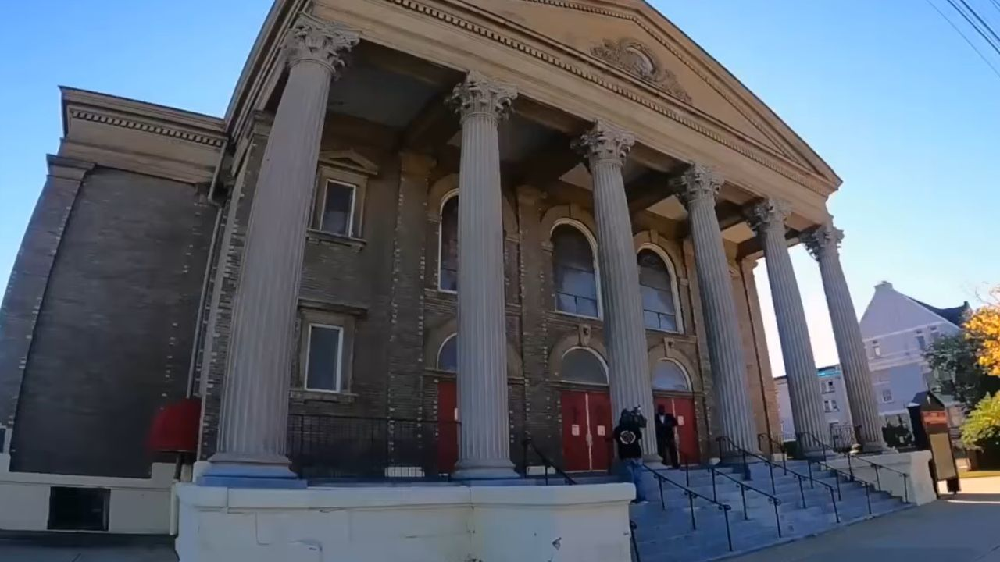

Historic Cleveland church receives $750,000 grant for building restoration
Shiloh Baptist Church in Ohio secures federal funding to repair structural damage and preserve its rich civil rights legacy.

Shiloh Baptist Church in Cleveland, Ohio, has secured a $750,000 federal grant to restore its aging historical sanctuary.
Why it matters
The grant ensures the preservation of a historical sanctuary that supported African American communities during the Great Migration and Civil Rights Movement. It helps a small congregation repair severe structural damage so it can maintain community outreach and health programs.
The details
The Christian Post reported that the funding originates from a specialized Civil Rights grant program administered by the National Park Service to repair extensive structural deterioration.
According to News 5 Cleveland and WKYC, the historic building at 5500 Scovill Avenue faces severe physical challenges, including a buckling foundation under its main columns, water damage to interior plaster, warping stained-glass windows, and limited disabled accessibility.
The Cleveland Restoration Society explained that the congregation was established in 1849 and relocated in 1926 to its current location, which was originally constructed in 1906 as a Jewish temple for the B’nai Jeshurun congregation.
Reverend Lisa Goods, the sanctuary’s first female senior pastor, told local media that maintaining the building had been a “long struggle” for the small congregation, calling the federal support “a gift from God.”
Goods explained that the congregation served as a place of asylum during the Great Migration and played an active role during the Civil Rights Movement, hosting Reverend Martin Luther King Jr. in 1967 when he spoke against the Vietnam war and urged support for economic initiatives.
In addition, the church helped rebuild homes destroyed in the 1966 Hough Riots and hosted early performances by Oscar-nominated performer Dorothy Dandridge, Goods noted.
An official church statement detailed that the three-year project managed by the Cleveland Restoration Society will install air conditioning and update its 1982 National Register Nomination to document its civil rights history.
Margaret Lann, director of preservation services at the society, told WKYC that physical restoration work is expected to begin in early 2027 after the church demonstrated its active community service in food accessibility and health care.
What’s next
Physical restoration work managed by the Cleveland Restoration Society is scheduled to begin in early 2027 as part of a three-year effort.
Reported from
- The Christian PostHistoric Cleveland church with Civil Rights ties receives $750K grant: ‘gift from God’